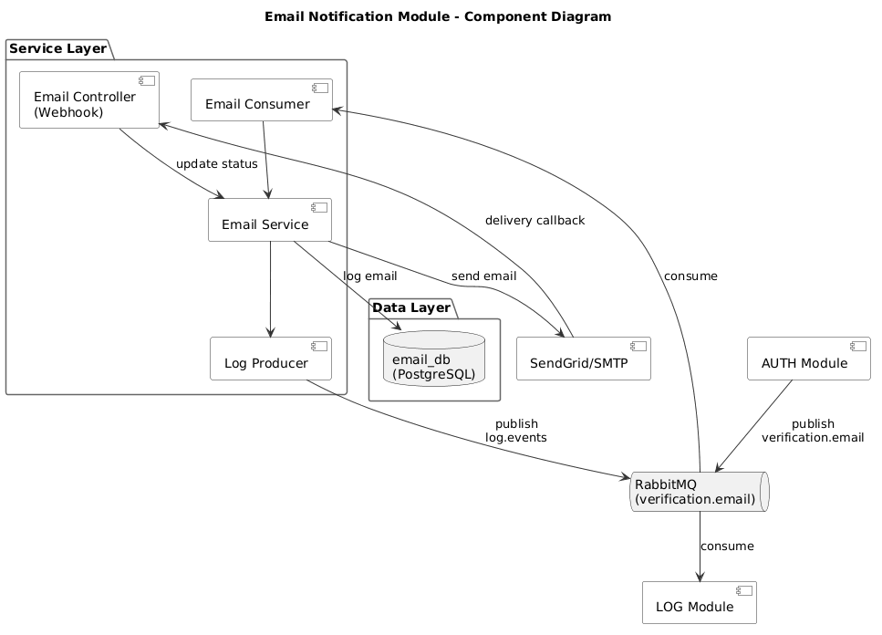
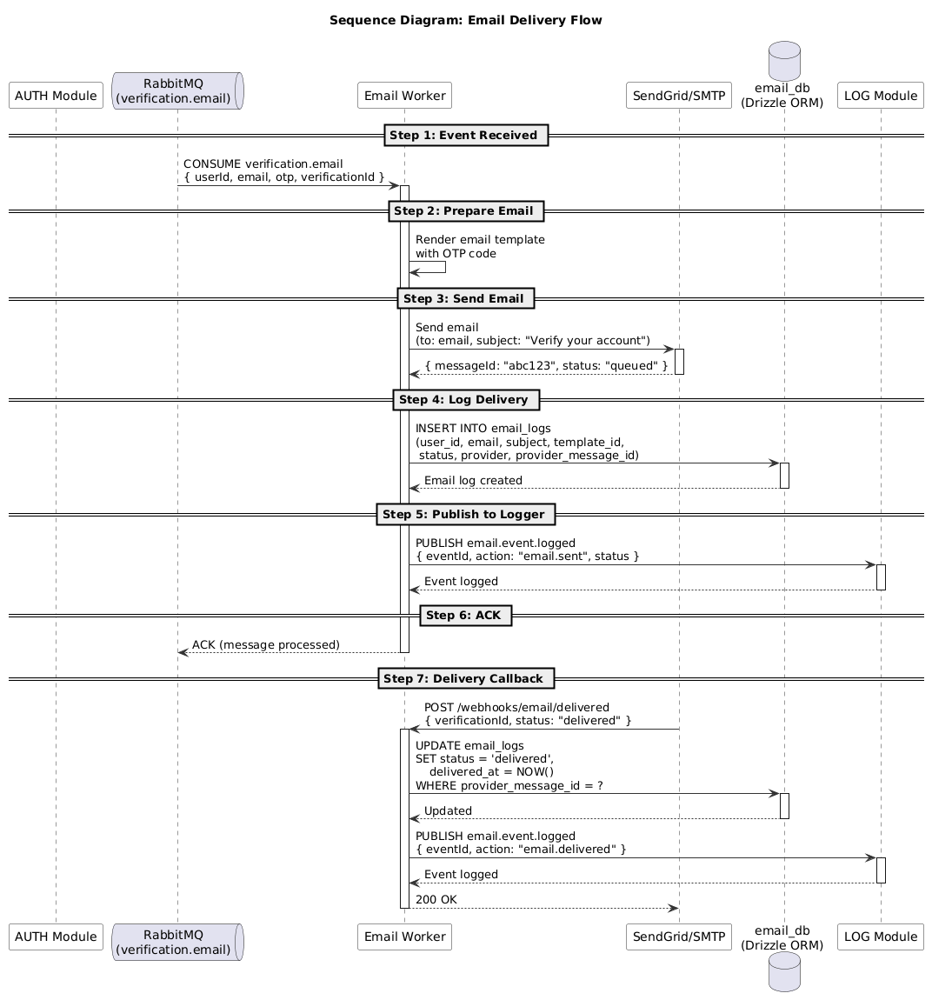

| Phiên bản | 1.0 |
| Hệ thống | Hệ thống Xác thực |
| Module | EMAIL - Thông báo Email |
| Cơ sở dữ liệu | email_db |
| Ngày tạo | 2026-08-05 |
| Tác giả | Nam Nguyen |
| Trạng thái | Nháp |
| SRS liên quan | SRS Thông báo Email |
Tài liệu này mô tả các quyết định thiết kế kỹ thuật cho module Thông báo Email.
| Tài liệu | Phiên bản | Mô tả |
|---|---|---|
| SRS | 1.0 | SRS Thông báo Email |
| Đặc tả API | 1.0 | Đặc tả API Thông báo Email |
| Thiết kế CSDL | 1.0 | Thiết kế CSDL Thông báo Email |
| Danh mục | Mã Yêu cầu | Phần Thiết kế |
|---|---|---|
| Chức năng | FR-001 - FR-005 | Phần 3, 5 |
| Phi chức năng | NFR-001 - NFR-004 | Phần 6, 8 |

| # | Quyết định | Lý do | Giải quyết |
|---|---|---|---|
| 1 | Sử dụng RabbitMQ cho xử lý email bất đồng bộ | Tách việc gửi email khỏi xử lý yêu cầu, cải thiện độ tin cậy | NFR-001, NFR-002 |
| 2 | Sử dụng SendGrid/SMTP làm nhà cung cấp email | Giao email đáng tin cậy với khả năng theo dõi | NFR-004 |
| 3 | PostgreSQL cho email_logs | Đảm bảo ACID cho lưu vết kiểm toán, nhất quán với các module khác | DR-001 |
| Thành phần | Trách nhiệm | Giải quyết |
|---|---|---|
| Email Consumer | Tiêu thụ từ RabbitMQ, kích hoạt gửi email | FR-001, FR-002 |
| Email Service | Business logic xử lý email | FR-001, FR-005 |
| Email Controller | Nhận callback giao dịch từ nhà cung cấp | FR-003 |
| Log Producer | Gửi sự kiện email đến module LOG | FR-004 |
Xem thêm: Thiết kế CSDL Thông báo Email
| Yêu cầu SRS | Giải pháp Thiết kế | Bảng CSDL |
|---|---|---|
| FR-001: Gửi Email Xác minh | Chèn bản ghi log khi gửi | email_logs |
| FR-003: Theo dõi Giao Email | Cập nhật trạng thái khi nhận callback | email_logs |
| FR-004: Ghi log Sự kiện Email | Lưu vết kiểm toán đầy đủ trong email_logs | email_logs |
| Phương thức | Đường dẫn | Mô tả | Giải quyết |
|---|---|---|---|
| POST | /api/webhooks/email/delivered | Nhận callback giao dịch | FR-003 |
| Yêu cầu SRS | Giải pháp Thiết kế | Triển khai |
|---|---|---|
| NFR-002 | Xác thực chữ ký webhook | Validate chữ ký HMAC-SHA256 |
| NFR-004 | Thử lại với exponential backoff | Tối đa 3 lần thử với độ trễ 1 phút, 5 phút, 15 phút |

| Sự kiện | Hướng | Giao thức | Hàng đợi | Mô tả |
|---|---|---|---|---|
| verification.email.requested | AUTH → EMAIL | RabbitMQ | verification.email | Kích hoạt khi người dùng yêu cầu xác minh email |
| verification.email.resent | AUTH → EMAIL | RabbitMQ | verification.email | Kích hoạt khi người dùng gửi lại xác minh email |
| application.submitted | RECR → EMAIL | RabbitMQ | recruitment.email | Gửi email xác nhận khi ứng viên gửi hồ sơ |
| interview.scheduled | RECR → EMAIL | RabbitMQ | recruitment.email | Gửi lời mời phỏng vấn kèm chi tiết lịch |
| offer.sent | RECR → EMAIL | RabbitMQ | recruitment.email | Gửi thư đề nghị kèm vị trí và lương |
| verification.email.delivered | EMAIL → AUTH | Webhook | - | Xác nhận trạng thái giao email cho AUTH |
| email.event.logged | EMAIL → LOG | RabbitMQ | log.events | Ghi log sự kiện giao email vào Logger |
| Dịch vụ | Giao thức | Mục đích |
|---|---|---|
| SendGrid/SMTP | HTTPS/SMTP | Nhà cung cấp giao email |
| HTTP Status | Mã | Mô tả |
|---|---|---|
| 400 | EMAIL_001 | Địa chỉ email không hợp lệ |
| 400 | EMAIL_002 | Không tìm thấy mẫu email |
| 502 | EMAIL_003 | Lỗi nhà cung cấp - giao email thất bại |
| 429 | EMAIL_004 | Vượt quá giới hạn tốc độ |
| 401 | EMAIL_005 | Chữ ký webhook không hợp lệ |
| Mã YC SRS | Yêu cầu | Phần TDS | Quyết định Thiết kế |
|---|---|---|---|
| FR-001 | Gửi Email Xác minh | 3.2 Ánh xạ Thành phần | RabbitMQ consumer xử lý hàng đợi email |
| FR-002 | Gửi lại Email Xác minh | 3.2 Ánh xạ Thành phần | Cùng hàng đợi, giới hạn tốc độ bởi AUTH |
| FR-003 | Theo dõi Giao Email | 5.1 Ánh xạ Endpoint | Callback HTTP từ nhà cung cấp email |
| FR-004 | Ghi log Sự kiện Email | 3.2 Ánh xạ Thành phần | Log Producer gửi đến module LOG |
| FR-005 | Thử lại Email Thất bại | 8. Xử lý Lỗi | Trường retry_count theo dõi số lần thử, exponential backoff |